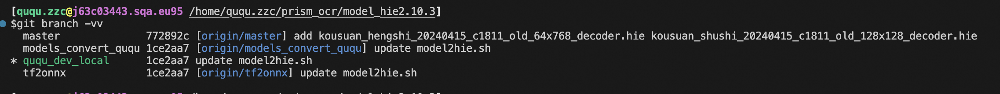

分支操作
查
查看本地分支
git branch -v
查看本地分支以及关联的远程分支
git branch -vv

合并
merge and rebase
加入目前分支如下图所示

合并前
- merge：下面的命令会把上图中两个分支最新的快照（C4，C3）和二者最近的祖先（C2）进行三方合并，合并的结果是生成一个新的快照并提交，如下图所示
(master) git merge experiment

采用 merge 合并
- rebase：可以提取在 C4 中引入的补丁和修改，然后在 C3 的基础上应用一次，这种操作称为 变基；即可以使用 rebase 命令将一个分支的所有修改都移动到另一个分支。例如
git checkout experiment
(experiment) git rebase master

将 C4 的修改变基应用到 C3 上
# 然后再将 experiment 和 master 合并
git checkout master
git merge experiment

master 分支快进合并
rebase 优点
- rebase 可以使提交历史更加整洁：从上面图中可以看出提交历史是一条直线没有分叉（虽然开发过程是并行的）
- 一般这样做是为了确保向远程分支推送时可以保持提交历史的整洁
rebase 准则
- 如果提交存在于你的仓库之外，而别人可能基于这些提交进行开发，那么不要执行变基
拉取 pull & fetch
从远程分支拉取到本地新分支
git checkout -b dev(本地分支名称) origin/develop(远程分支名称
从本地新分支推送到远程，并在远程新建分支
git push --set-upstream origin name
# name 为远程分支名字
回退 reset
命令
git reset
仅取消本次提交，但不删除修改内容
git reset --soft HEAD^
取消本次提交，并删除修改内容
git reset --hard HEAD^
本地回退然后同步到远程分支
1.首先回退到目标id
git reset --hard id
2.然后强制推送到远程同名分支(假设分支名 ququ)
git push -u origin ququ -f

删除
删除远程分支
- 运行带有 --delete 选项的 git push 命令来删除一个远程分支
- 基本上这个命令做的只是从服务器上移除这个指针。Git 服务器通常会保留数据一段时间直到垃圾回收运行，所以如果不小心删除掉了，通常是很容易恢复的
git push origin --delete 远程分支名